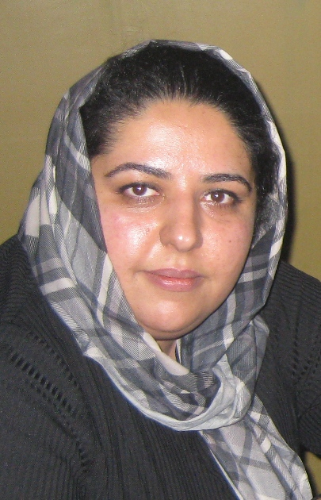

|
|

دیدار اعضای ادوار تحکیم وحدت با خانواده مهرنوش اعتمادی
چهار شنبه11 آذر 1388
تغییر برای برابری: اعضاي سازمان دانش آموختگان ايران (شعبه اصفهان) روز سه شنبه با خانواده مهرنوش اعتمادي، از فعالين کمپين يک ميليون امضاء در اصفهان ديدار کردند.
در اين ديدار اعضای ادوار تحکیم وحدت درباره چگونگی بازداشت و وضعیت پرونده این فعال حقوق زنان با خانواده اش گفتگو کردند.
مهرنوش اعتمادي، دوم آذرماه در منزل شخصی خود بازداشت شد. ماموران امنیتی با تفتیش منزل این فعال کمپین یک میلیون امضا، شماری از کتابها، جزوههای آموزشی و کیس کامپیوتر وی را توقیف کردند.
شعبه 11 دادگاه انقلاب اصفهان، پس از تفهیم اتهام مهرنوش اعتمادی در روز سوم آذرماه، قرار بازداشت او را تمدید کرد. به گفته خانواده این فعال حقوق زنان، باوجود ارائه سند جهت وثيقه تعيين شده از سوي دادگاه اصفهان هنوز وی در بند است و مقامات قضایی از پذیرفتن وثیقه خودداری می کنند.
مهرنوش اعتمادی از نخستین اعضای کمپین یک میلیون امضا است. وی همچنین در رابطه با مبارزه با خشونت علیه زنان فعالیت میکند. وی پیش از بازداشت بارها به صورت تلفنی احضار و تهدید شده بود.
طی سه سال گذشته، از آغاز به کار کمپین در 5 شهریور 1385 تا کنون 50 نفر از فعالان کمپین یک میلیون امضا بازداشت شده اند.4 نفر بدون بازداشت به دادگاه فراخوانده شده اند و بیش از 15 نفر احضار و مورد بازجویی قرار گرفته اند.
چهار سال و شش ماه حبس تعلیقی مجموعه احکامی است که تا کنون برای فعالان کمپین صادر شده و تعدادی از پرونده ها نیز در انتظار تشکیل دادگاه یا صدور حکم هستند.
اعضای کمپین در سه سال گذشته در مجموع 273 روز در بازداشتگاه های وزرا، گیشا، بند 209 ، بند عمومی زندان اوین و بازداشتگاه اصفهان به سر برده اند.
آزادی اغلب اعضای کمپین به قید کفالت و وثیقه بوده است، 461 میلیون تومان قرار کفالت و قرار وثیقه 230 میلیون تومانی بهای آزادی موقت فعالان کمپین تا زمان تشکیل دادگاه و صدور حکم است.
در همین رابطه:
بازداشت یک فعال حقوق زنان در اصفهان/ رادیو زمانه
مهرنوش اعتمادی از فعالان زن در اصفهان بازداشت شد/ادوار نیوز
مهرنوش اعتمادی از فعالان کمپین یک میلیون امضا در اصفهان بازداشت شد/کمیته گزارشگران حقوق بشر
یک فعال جنبش زنان در اصفهان بازداشت شد/نوروز
گفتگوی مادر مهرنوش اعتمادی با سایت تغییر برای برابری/اخبار روز
دستگیری یک فعال زنان در اصفهان/ صدای آلمان
فقط مرا ازاین سرگردانی نجات دهند/ صدیقه شالبافیان/ شبکه همبستگی زنان
مهرنوش اعتمادی از فعالین حقوق زنان بازداشت شد/شهرزادنیوز
مهرنوش اعتمادی از فعالان زن در اصفهان بازداشت شد/پیک ایران